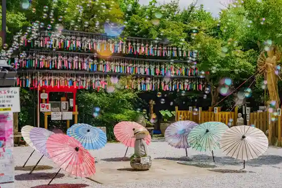
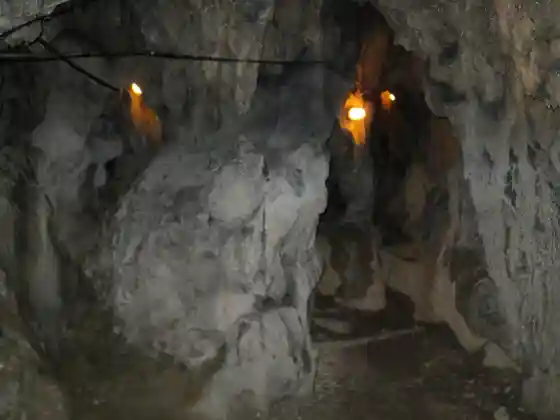

Chiroruchokoautorettoshoppu
Tagawa, Fukuoka · 0947-44-0715 · Official / source link
Mitsui Tera (Byodo Tera) Furin Tonneru
Tagawa, Fukuoka · 0947-42-7206 · Official / source link

Iwaya Limestone Cave
Tagawa, Fukuoka · 0947-85-7147 · Official / source link

Tagawa Shimin Puru
Tagawa, Fukuoka · 0947-45-7654 · Official / source link
Tagawa Sekitan History Museum
Tagawa, Fukuoka · 0947-44-5745 · Official / source link
Sekitan Memorial Park
Tagawa, Fukuoka · 0947-44-2000 · Official / source link
Mitsui Tera (Byodo Tera) no Autumn Leaves
Tagawa, Fukuoka · 0947-85-7147 · Official / source link
Kyu Mitsui Tagawa Kogyo Tokoro Ida Tateko Yagura
Tagawa, Fukuoka · 0947-44-5745 · Official / source link
Kaze Osamu Hachiman Shrine
Tagawa, Fukuoka · 0947-42-1135 · Official / source link
Kyu Mitsui Tagawa Kogyo Tokoro Ida Tateko Daiichi Daini Entotsu
Tagawa, Fukuoka · 0947-44-5745 · Official / source link
Tanko Fushi
Tagawa, Fukuoka · 0947-44-5745 · Official / source link
Tagawa Art Museum
Tagawa, Fukuoka · 0947-42-6161 · Official / source link
Tagawa Horumon Nabe
Tagawa, Fukuoka · Official / source link
Taiho Yama Ten Shin Tera no Autumn Leaves
Tagawa, Fukuoka · 0947-85-7147 · Official / source link
Naka Village Art Museum
Tagawa, Fukuoka · 0947-42-1018 · Official / source link
Kurai to Hachiman Shrine
Tagawa, Fukuoka · 0947-44-5745 · Official / source link
Natsu Kichi 1 Go Burial Mound Natsu Kichi 21 Go Burial Mound
Tagawa, Fukuoka · 0947-44-5745 · Official / source link
Kasuga Jinja Iwato Kagura
Tagawa, Fukuoka · 0947-85-7147 · Official / source link